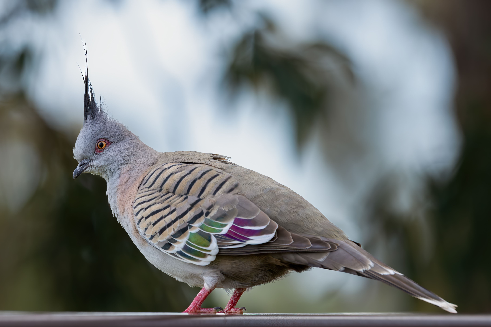

The Crested Pigeon is a slender Australian pigeon with a long pointed crest, a grey-brown body and striking dark wing markings. It is commonly found in open country, grasslands, farmland, parks and urban areas, where it often walks along the ground searching for food. When disturbed, it takes off with rapid wingbeats that produce a distinctive whistling sound. Crested Pigeons usually feed on the ground and are often seen singly, in pairs or in small groups. They drink regularly and may gather in large numbers around water sources in dry regions.